ホーム
Home
部・サークル
club
キャンパスマップ
Canpasmap
リンク
Link
部・サークル一覧
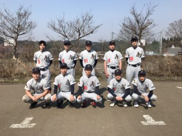
軟式野球部
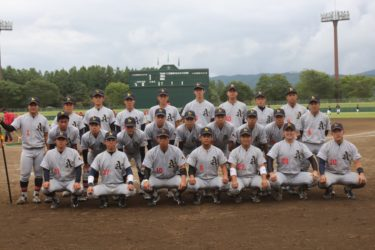
硬式野球部
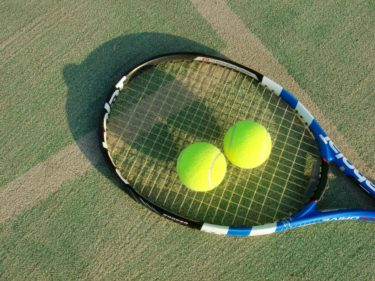
硬式テニス部
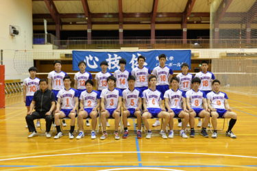
バレーボール部
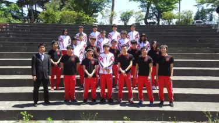
陸上競技部
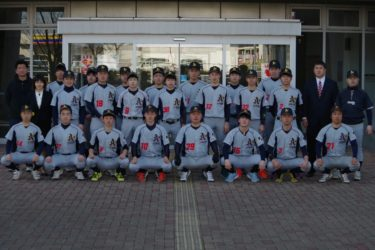
準硬式野球部
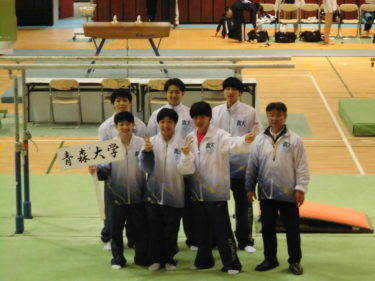
体操競技部
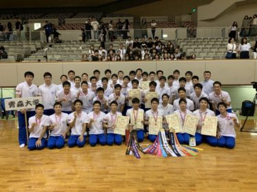
新体操部
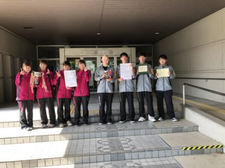
卓球部
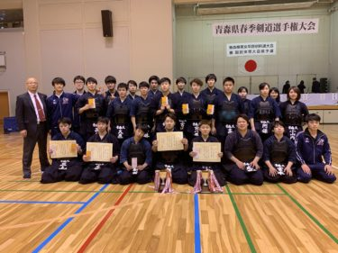
剣道部
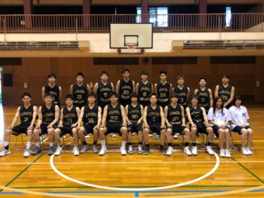
バスケットボール部
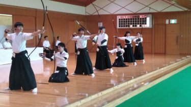
弓道部
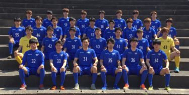
サッカー部
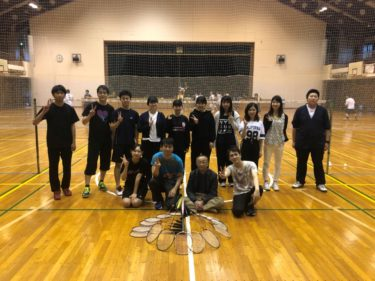
バドミントン部
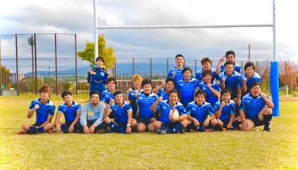
ラグビー部
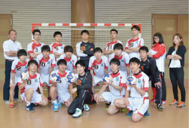
ハンドボール部
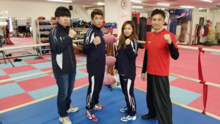
ボクシング部
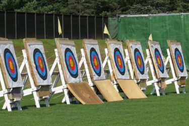
アーチェリー部
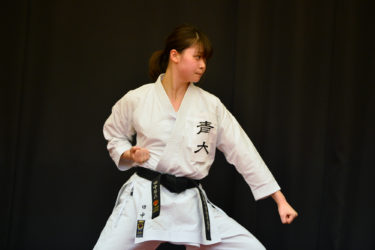
空手部
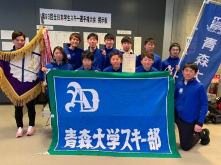
スキー部
スポーツサークル
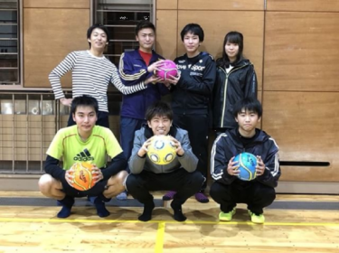
フットサルサークル
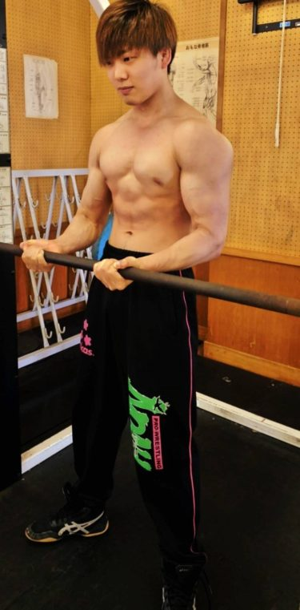
ウェイトトレーニングサークル
文化会系へ